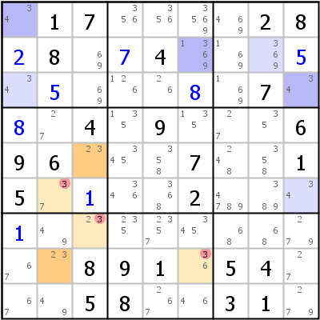

HoDoKu Lösungstechnik-Index: Beispiel für "Multi Colors"

Originales Sudoku:
.17....28.8..4...........7...4.9...696...7..15....2..............891.54...58..31.
Verwenden Sie die folgende Zeile um das Sudoku in HoDoKu zu laden:
:0501:3:.17....28+28.+74...+5.+5...+8.7.+8.4.9...696...7..15.+1..2...+1..........891.54...58..31.:611 323 631 333 334 335 437 939 342 769 969 272 372 772 673 973 474 674 675 676 277 777 977 978 381 782 491 292 792:362 373 386:
Die folgende Darstellung kann per Zwischenablage in die meisten Sudoku-Programme eingefügt werden:
.------------.-----------------.----------------. | 34 1 7 | 356 356 3569 | 469 2 8 | | 2 8 69 | 7 4 1369 | 169 369 5 | | 34 5 69 | 126 26 8 | 169 7 34 | :------------+-----------------+----------------: | 8 27 4 | 135 9 135 | 27 35 6 | | 9 6 23 | 345 358 7 | 248 358 1 | | 5 37 1 | 346 368 2 | 4789 389 34 | :------------+-----------------+----------------: | 1 49 23 | 235 2357 345 | 68 68 279 | | 67 23 8 | 9 1 36 | 5 4 27 | | 67 49 5 | 8 267 46 | 3 1 279 | '------------'-----------------'----------------'
Darstellung des Lösungsschrittes:
.--------------.------------------.----------------. | 34 1 7 | 356 356 3569 | 469 2 8 | | 2 8 69 | 7 4 1369 | 169 369 5 | | 34 5 69 | 126 26 8 | 169 7 34 | :--------------+------------------+----------------: | 8 27 4 | 135 9 135 | 27 35 6 | | 9 6 23 | 345 358 7 | 248 358 1 | | 5 -37 1 | 346 368 2 | 4789 389 34 | :--------------+------------------+----------------: | 1 49 2-3 | 235 2357 345 | 68 68 279 | | 67 23 8 | 9 1 -36 | 5 4 27 | | 67 49 5 | 8 267 46 | 3 1 279 | '--------------'------------------'----------------' Multi Colors: 3 (r5c3,r8c2) / (r6c2,r7c3,r8c6), (r1c1,r2c6,r3c9) / (r2c8,r3c1,r6c9) => r6c2,r7c3,r8c6<>3
Copyright © 2008-12 von Bernhard Hobiger
Zuletzt geändert am 5. Mai 2025 von shorty#3746
(basierend auf dem 1to9only Github-Repo)
Alles Material auf dieser Site unterliegt der GNU FDLv1.3.